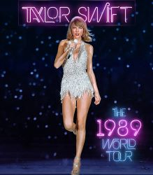
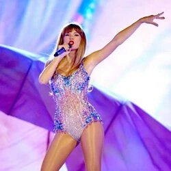

The Fearless Tour fue la primera gira de la cantante de música country Taylor Swift, con un total de 105 shows, para promocionar su segundo álbum de estudio Fearless. El tour incluyó actos de apertura por parte de artistas como Kellie Pickler y Gloriana. El cantante adolescente, Justin Bieber se incorporó en el tour cuando ella fue al Reino Unido a finales de 2009. Durante la gira, Taylor actuó con invitados especiales como John Mayer, Faith Hill y Katy Perry.
Speak Now World Tour fue la segunda gira de la cantante y compositora estadounidense Taylor Swift,110 en total,en apoyo de su tercer álbum de estudio, Speak Now. El tour visitó Asia, Europa, América del Norte y Oceanía, ocupando el décimo lugar en la lista de Pollstar's "Top 50 Worldwide Tour (Mid-Year)", recaudando más de $40 millones.1 Al término de 2011, la gira quedó en quinto lugar en la lista de "Billboard's Annual Top 25 Tours", con una recaudación de $123 millones con 89 espectáculos.
.jpg)
.jpg)
Red Tour fue la tercera gira de la cantante y compositora estadounidense Taylor Swift,con un total de 86 shows, para promover su cuarto álbum de estudio Red. Comenzó el 13 de marzo de 2013 en Estados Unidos y culminó el 12 de junio de 2014 en Singapur.
Posteriormente, dijo que la gira sería «más madura» en cuanto a los efectos visuales, en comparación con sus predecesoras, y añadió que: «Creo que en mis anteriores álbumes y en mis giras previas me había gustado trabajar en el elemento de fantasía y creo que esta gira va a incorporar un poco más de realidad en lo visual, lo cual es bueno».
.jpg)
The 1989 World Tour fue la cuarta gira de la cantante y compositora estadounidense Taylor Swift, con un total de 85 shows, realizada para promocionar su quinto álbum de estudio 1989, de 2014. Comenzó en mayo de 2015 en Tokio (Japón), y terminó en diciembre en Melbourne (Australia).12 A través de la gira, la cantante visitó ochenta y cinco fechas a lo largo de cuatro continentes: América del Norte, Asia, Europa, y Oceanía;34 y recaudó más de $250 millones. Gracias a esto, la cantante fue la artista de mayor recaudación en ventas de entradas en 2015 y The 1989 World Tour en sí se convirtió en la mayor norteamericana de la historia comercialmente.5
El 13 de diciembre de 2015, en el vigésimo-sexto cumpleaños de Swift, anunció que se había asociado con Apple Music para lanzar una película de concierto titulada The 1989 World Tour Live el 20 de diciembre. Filmada frente a 75,980 fanáticos durante su parada en ANZ Stadium en Sídney el noviembre 28, muestra la interpretación completa y el material nunca visto de detrás del escenario y de los ensayos con algunos de los invitados musicales y sorpresivos de espectáculos anteriores.

.jpg)
.jpg)
Taylor Swift's Reputation Stadium Tour, también conocido como Reputation Stadium Tour, o simplemente como Reputation Tour, fue la quinta gira mundial de conciertos y la primera por estadios de la cantante estadounidense Taylor Swift, con un total de 53 shows, realizada con el fin de promocionar su sexto álbum de estudio, Reputation (2017). El inicio de la gira fue el 8 de mayo de 2018 en la ciudad de Glendale y finalizó el 21 de noviembre de 2018 en Tokio, con 53 conciertos. Recibió a 2.888.892 asistentes y recaudó un total de $345.7 millones, convirtiéndose en la gira más exitosa de Swift hasta la fecha y la gira con mayor recaudación en la historia de Estados Unidos y América del Norte.
El 13 de diciembre de 2018, Swift anunció que la filmación del concierto sería lanzada mundialmente en la plataforma Netflix el 31 de diciembre de 2018.
.jpg)
.jpg)
The Eras Tour (estilizado como Taylor Swift | The Eras Tour) es la sexta gira de conciertos de la cantante y compositora estadounidense Taylor Swift. Después de no haber realizado la gira de sus álbumes de estudio en 2019, 2020 y 2021 con Lover, Folklore y Evermore debido a la pandemia de COVID-19, Swift se embarca en The Eras Tour en apoyo de todos sus álbumes, incluyendo su último álbum, Midnights (2022). Se trata de una gira por estadios que comenzó el 17 de marzo de 2023 en Glendale, Arizona.
El show es el más extenso en la carrera de Swift hasta ahora, con una duración de aproximadamente tres horas y quince minutos.36 Consiste en 44 canciones dispersadas en diez actos, los cuales tienen un esquema colorimétrico específico aludiendo a cada álbum de estudio, con interludios visuales transmitidos en la pantalla entre cada acto marcando el intermedio.

.jpg)

.jpg)